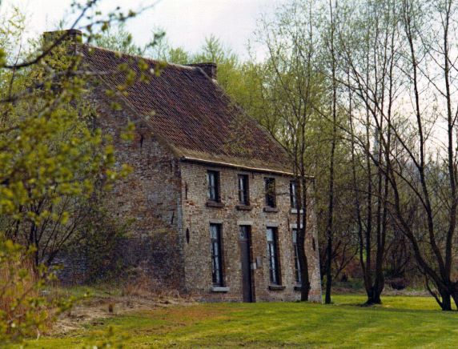
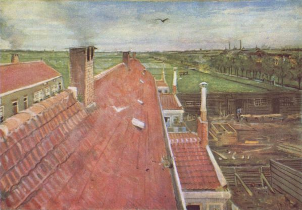
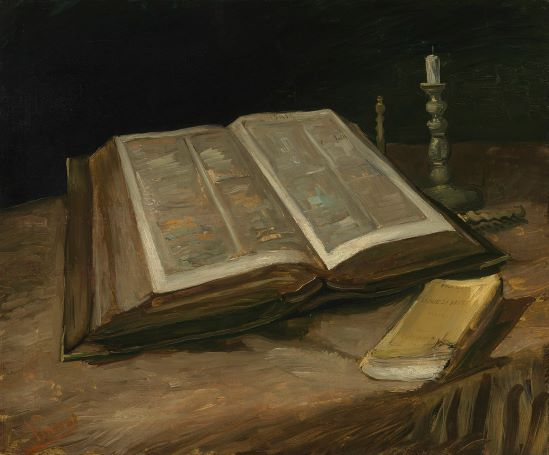
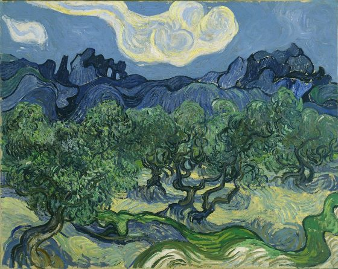
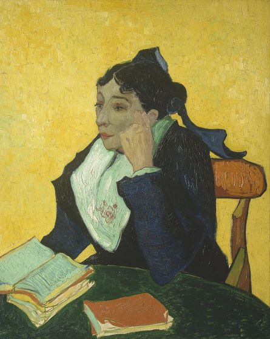
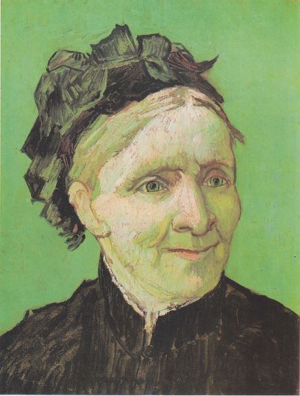
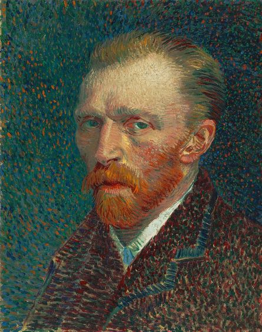
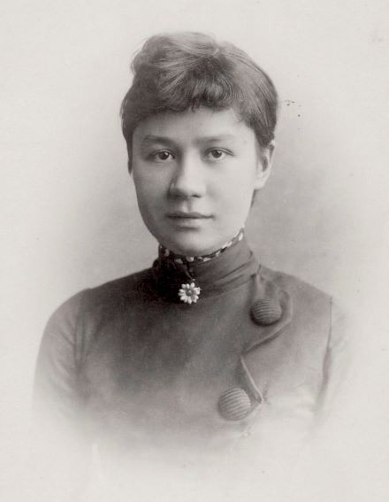
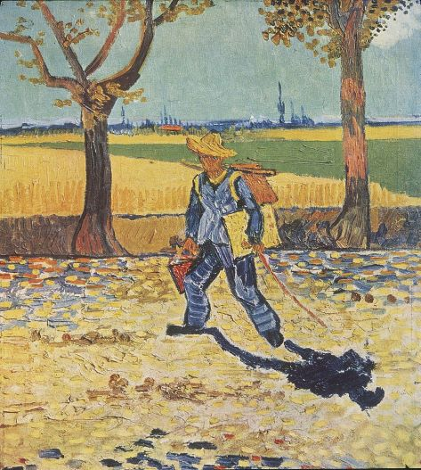
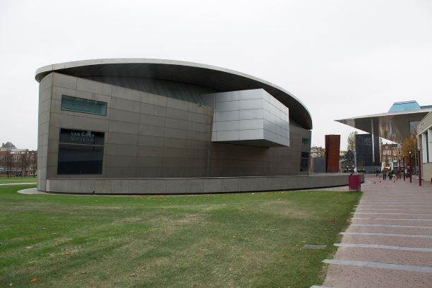

Early years
Vincent Willem van Gogh was born on 30 March 1853 in Groot-Zundert, in the predominantly Catholic province of North Brabant in the Netherlands.  He was the oldest surviving child of Theodorus van Gogh (1822–1885), a minister of the Dutch Reformed Church, and his wife Anna Cornelia Carbentus (1819–1907). Van Gogh was given the name of his grandfather and of a brother stillborn exactly a year before his birth. Vincent was a common name in the Van Gogh family: his grandfather, Vincent (1789–1874), who received a degree in theology at the University of Leiden in 1811, had six sons, three of whom became art dealers. This Vincent may have been named after his own great-uncle, a sculptor (1729–1802).
{kind=link}
Etten, Drenthe and The Hague
Van Gogh returned to Etten in April 1881 for an extended stay with his parents. He continued to draw, often using his neighbours as subjects. In August 1881, his recently widowed cousin, Cornelia "Kee" Vos-Stricker, daughter of his mother's older sister Willemina and Johannes Stricker, arrived for a visit.  He was thrilled and took long walks with her. Kee was seven years older than he was and had an eight-year-old son. Van Gogh surprised everyone by declaring his love to her and proposing marriage. She refused with the words "No, nay, never" ("nooit, neen, nimmer"). After Kee returned to Amsterdam, Van Gogh went to The Hague to try to sell paintings and to meet with his second cousin, Anton Mauve. Mauve was the successful artist Van Gogh longed to be. Mauve invited him to return in a few months and suggested he spend the intervening time working in charcoal and pastels; Van Gogh went back to Etten and followed this advice.
{kind=link}
Emerging artist
In Nuenen, Van Gogh focused on painting and drawing. Working outside and very quickly, he completed sketches and paintings of weavers and their cottages. Van Gogh also completed The Parsonage Garden at Nuenen, which was stolen from the Singer Laren in March 2020.  From August 1884, Margot Begemann, a neighbour's daughter ten years his senior, joined him on his forays; she fell in love and he reciprocated, though less enthusiastically. They wanted to marry, but neither side of their families were in favour. Margot was distraught and took an overdose of strychnine, but survived after Van Gogh rushed her to a nearby hospital. On 26 March 1885, his father died of a heart attack.
{kind=link}
Artistic breakthrough
Ill from drink and suffering from smoker's cough, in February
1888 Van Gogh sought refuge in Arles. He seems to have moved
with thoughts of founding an art colony.
.jpg) The Danish artist Christian Mourier-Petersen became his
companion for two months, and, at first, Arles appeared exotic.
In a letter, he described it as a foreign country: "The Zouaves,
the brothels, the adorable little Arlésienne going to her First
Communion, the priest in his surplice, who looks like a
dangerous rhinoceros, the people drinking absinthe, all seem to
me creatures from another world."
The Danish artist Christian Mourier-Petersen became his
companion for two months, and, at first, Arles appeared exotic.
In a letter, he described it as a foreign country: "The Zouaves,
the brothels, the adorable little Arlésienne going to her First
Communion, the priest in his surplice, who looks like a
dangerous rhinoceros, the people drinking absinthe, all seem to
me creatures from another world."
Death
On 27 July 1890, aged 37, Van Gogh shot himself in the chest
with a 7mm Lefaucheux à broche revolver. There were no witnesses
and he died 30 hours after the incident. The shooting may have
taken place in the wheat field in which he had been painting, or
a local barn. The bullet was deflected by a rib and passed
through his chest without doing apparent damage to internal
organs – probably stopped by his spine.
 He was able to walk back to the Auberge Ravoux, where he was
attended to by two doctors, but without a surgeon present the
bullet could not be removed. The doctors tended to him as best
they could, then left him alone in his room, smoking his pipe.
The following morning, Theo rushed to his brother's side,
finding him in good spirits. But within hours Vincent began to
fail, suffering from an untreated infection resulting from the
wound. He died in the early hours of 29 July. According to Theo,
Vincent's last words were: "The sadness will last forever".
He was able to walk back to the Auberge Ravoux, where he was
attended to by two doctors, but without a surgeon present the
bullet could not be removed. The doctors tended to him as best
they could, then left him alone in his room, smoking his pipe.
The following morning, Theo rushed to his brother's side,
finding him in good spirits. But within hours Vincent began to
fail, suffering from an untreated infection resulting from the
wound. He died in the early hours of 29 July. According to Theo,
Vincent's last words were: "The sadness will last forever".
Artistic development
Van Gogh drew, and painted with watercolours while at school, but only a few examples survive and the authorship of some has been challenged. When he took up art as an adult, he began at an elementary level. In early 1882, his uncle, Cornelis Marinus, owner of a well-known gallery of contemporary art in Amsterdam, asked for drawings of The Hague.  Van Gogh's work did not live up to expectations. Marinus offered a second commission, specifying the subject matter in detail, but was again disappointed with the result. Van Gogh persevered; he experimented with lighting in his studio using variable shutters and different drawing materials. For more than a year he worked on single figures – highly elaborate studies in black and white, which at the time gained him only criticism. Later, they were recognised as early masterpieces.
{kind=link}
Major series
Van Gogh's stylistic developments are usually linked to the periods he spent living in different places across Europe. He was inclined to immerse himself in local cultures and lighting conditions, although he maintained a highly individual visual outlook throughout.  His evolution as an artist was slow, and he was aware of his painterly limitations. He moved home often, perhaps to expose himself to new visual stimuli, and through exposure develop his technical skill. Art historian Melissa McQuillan believes the moves also reflect later stylistic changes, and that Van Gogh used the moves to avoid conflict, and as a coping mechanism for when the idealistic artist was faced with the realities of his then current situation.
{kind=link}
Portraits
The portraits gave Van Gogh his best opportunity to earn.  He believed they were "the only thing in painting that moves me deeply and that gives me a sense of the infinite." He wrote to his sister that he wished to paint portraits that would endure, and that he would use colour to capture their emotions and character rather than aiming for photographic realism. Those closest to Van Gogh are mostly absent from his portraits; he rarely painted Theo, Van Rappard or Bernard. The portraits of his mother were from photographs.
{kind=link}
Self-portraits
Van Gogh created more than 43 self-portraits between 1885 and 1889.  They were usually completed in series, such as those painted in Paris in mid-1887, and continued until shortly before his death. Generally the portraits were studies, created during introspective periods when he was reluctant to mix with others, or when he lacked models, and so painted himself.
.jpg){kind=link}
Flowers
Van Gogh painted several landscapes with flowers, including roses, lilacs, irises, and sunflowers. Some reflect his interests in the language of colour, and also in Japanese ukiyo-e. There are two series of dying sunflowers. The first was painted in Paris in 1887 and shows flowers lying on the ground. The second set was completed a year later in Arles and is of bouquets in a vase positioned in early morning light. Both are built from thickly layered paintwork, which, according to the London National Gallery, evoke the "texture of the seed-heads".
Cypresses and olives
Fifteen canvases depict cypresses, a tree he became fascinated with in Arles. He brought life to the trees, which were traditionally seen as emblematic of death. The series of cypresses he began in Arles featured the trees in the distance, as windbreaks in fields; when he was at Saint-Rémy he brought them to the foreground. Vincent wrote to Theo in May 1889: "Cypresses still preoccupy me, I should like to do something with them like my canvases of sunflowers"; he went on to say, "They are beautiful in line and proportion like an Egyptian obelisk."
Reputation and legacy
After Van Gogh's first exhibitions in the late 1880s, his reputation grew steadily among artists, art critics, dealers and collectors.  In 1887, André Antoine hung Van Gogh's alongside works of Georges Seurat and Paul Signac, at the Théâtre Libre in Paris; some were acquired by Julien Tanguy.[281] In 1889, his work was described in the journal Le Moderniste Illustré by Albert Aurier as characterised by "fire, intensity, sunshine". Ten paintings were shown at the Société des Artistes Indépendants, in Brussels in January 1890. French president Marie François Sadi Carnot was said to have been impressed by Van Gogh's work.
{kind=link}
After Van Gogh's death, memorial exhibitions were held in Brussels, Paris, The Hague and Antwerp. His work was shown in several high-profile exhibitions, including six works at Les XX; in 1891 there was a retrospective exhibition in Brussels. In 1892, Octave Mirbeau wrote that Van Gogh's suicide was an "infinitely sadder loss for art ... even though the populace has not crowded to a magnificent funeral, and poor Vincent van Gogh, whose demise means the extinction of a beautiful flame of genius, has gone to his death as obscure and neglected as he lived."
Theo died in January 1891, removing Vincent's most vocal and well-connected champion.  Theo's widow Johanna van Gogh-Bonger was a Dutchwoman in her twenties who had not known either her husband or her brother-in-law very long and who suddenly had to take care of several hundreds of paintings, letters and drawings, as well as her infant son, Vincent Willem van Gogh. Gauguin was not inclined to offer assistance in promoting Van Gogh's reputation, and Johanna's brother Andries Bonger also seemed lukewarm about his work. Aurier, one of Van Gogh's earliest supporters among the critics, died of typhoid fever in 1892 at the age of twenty-seven.
{kind=link}
In 1892, Émile Bernard organised a small solo show of Van Gogh's paintings in Paris, and Julien Tanguy exhibited his Van Gogh paintings with several consigned from Johanna van Gogh-Bonger. In April 1894, the Durand-Ruel Gallery in Paris agreed to take 10 paintings on consignment from Van Gogh's estate. In 1896, the Fauvist painter Henri Matisse, then an unknown art student, visited John Russell on Belle Île off Brittany. Russell had been a close friend of Van Gogh; he introduced Matisse to the Dutchman's work, and gave him a Van Gogh drawing. Influenced by Van Gogh, Matisse abandoned his earth-coloured palette for bright colours.
Van Gogh Museum
Van Gogh's nephew and namesake, Vincent Willem van Gogh
(1890–1978), inherited the estate after his mother's death in
1925.
.jpg) During the early 1950s he arranged for the publication of a
complete edition of the letters presented in four volumes and
several languages. He then began negotiations with the Dutch
government to subsidise a foundation to purchase and house the
entire collection. Theo's son participated in planning the
project in the hope that the works would be exhibited under the
best possible conditions. The project began in 1963; architect
Gerrit Rietveld was commissioned to design it, and after his
death in 1964 Kisho Kurokawa took charge. Work progressed
throughout the 1960s, with 1972 as the target for its grand
opening.
During the early 1950s he arranged for the publication of a
complete edition of the letters presented in four volumes and
several languages. He then began negotiations with the Dutch
government to subsidise a foundation to purchase and house the
entire collection. Theo's son participated in planning the
project in the hope that the works would be exhibited under the
best possible conditions. The project began in 1963; architect
Gerrit Rietveld was commissioned to design it, and after his
death in 1964 Kisho Kurokawa took charge. Work progressed
throughout the 1960s, with 1972 as the target for its grand
opening.
The Van Gogh Museum opened in the Museumplein in Amsterdam in 1973.  It became the second most popular museum in the Netherlands, after the Rijksmuseum, regularly receiving more than 1.5 million visitors a year. In 2015 it had a record 1.9 million. Eighty-five percent of the visitors come from other countries.
.jpg){kind=link}